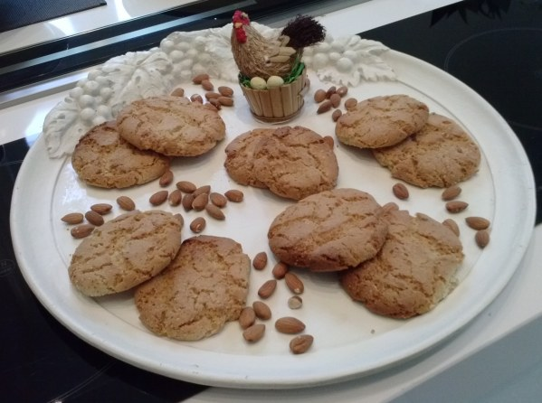

Cookie aux amandes
chef_hat
18 min
rice_bowl
Très Facile
finance_chip
Bon marché
Ingrédients
- 82g de beurre tendre
- 50g de sucre
- 1 pincée de sel
- 150g de farine
- 1 cuillère à café d'extrait de vanille
- 100g de cassonnade
- 2 Oeufs
- 70g d'amandes en poudre
- 50g d'amandes effilées
Etape 1
Préchauffer le four à 180°C
Etape 2
Dans un saladier, battre le beurre mOu avec la cassOnade et le sucre afin d'obtenir un mélange mousseux.
Etape 3
AjOuter une cuillère à sOupe d'extrait de vanille.
Etape 4
AjOuter les Oeufs un à un et battre l'ensemble.
Etape 5
AjOuter la farine melangée au sel puis battre le tout afin d'Obtenir une preparatiOn lisse et Onctueuse.
Etape 6
AjOuter les amandes en poudres et battre encOre.
Etape 7
Ajouter 30g d'amandes effilées et mélanger l'ensemble.
Etape 8
DépOser des cuillères de cette pâte sur une plaque de fOur recOuverte de papier sulfurisé en les
espaçant bien (faire 2 fOurnées vOire plus) et saupoudrer avec le reste d'amandes effilées.
Etape 9
Mettre au fOur 8 à 9 min.